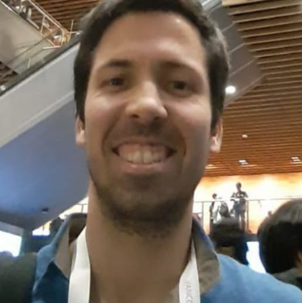

I am a certified Physics nerd 🌌 and an amateur forensic scientist 🕵️ with a keen interest in challenging problems with real-world applications 🌍.
I’ve worked as a data analyst, software tester, DevOps engineer and ML consultant for several companies, in areas ranging from market research to fiber optic telecommunications and mobility.
Currently, I work as a DevOps engineer and ML consultant at the Siemens Lisbon Tech Hub, while pursuing a PhD degree in Cognitive Science at ULisboa.
My research focuses on the application of ML algorithms to improve the performance of EEG-based brain-computer interfaces 🧠.
QHack Recap - PennyLane, Amazon Braket and Beyond 🚀
Defect Detection with Amazon Lookout for Vision 🏭
WBME Workshop - Machine Learning for Medicine and Healthcare 👨⚕️